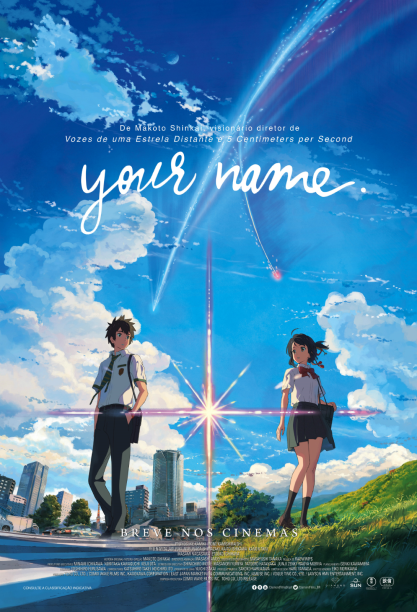

Kimi no Na wa. é um filme de animé japonês, realizado e escrito por
Makoto Shinkai, animado pelo estúdio CoMix Wave Films e distribuído pela Tōhō. O desenho das
personagens foi realizado por Masayoshi Tanaka e a banda sonora foi composta pela banda Radwimps.
Foi exibido na convenção de animé Anime Expo a 3 de julho de 2016 em Los Angeles, na Califórnia e estreou-se no Japão a 26 de agosto do mesmo ano.
Um romance homónimo escrito por Makoto Shinkai que inspirou o filme, foi publicado a 18 de junho de 2016.
Na Anime Expo, os direitos de distribuição do filme na América do Norte foram adquiridos pela Funimation.
No Brasil, o mangá foi anunciado pela Editora JBC, e o filme anunciado, com estreia em 11 de outubro nos cinemas brasileiros.
Apenas a rede de cinemas Cinemark exibiu o filme no Brasil, em 35 salas e sessão única
Mitsuha é uma garota do ensino médio que mora na cidade de Itomori, na região montanhosa de Hida, Japão. Entediada com a vida no campo, deseja ter uma vida mais agitada, querendo mudar-se para Tóquio.
Com sua avó e irmã mais nova, ela faz kuchikamizake saquê e o leva como oferenda ao túmulo da família em uma montanha fora da cidade.
Taki, um garoto do ensino médio que vive em Tóquio, começa a trocar de corpo com Mitsuha por várias vezes.
Eles percebem que isso não é um sonho quando seus amigos e familiares dizem que eles agiram muito estranhamente recentemente.
Um dia, ambos decidem começar a se comunicar, deixando bilhetes.
Um dia as trocas param causando curiosidade em Taki sobre o motivo, motivando-o a procurar sobre o povoado de Mitsuha, o que o leva a uma terrível descoberta, que o motiva a ir mais a fundo em suas pesquisas.
your name é um filme complicado de ser entendido